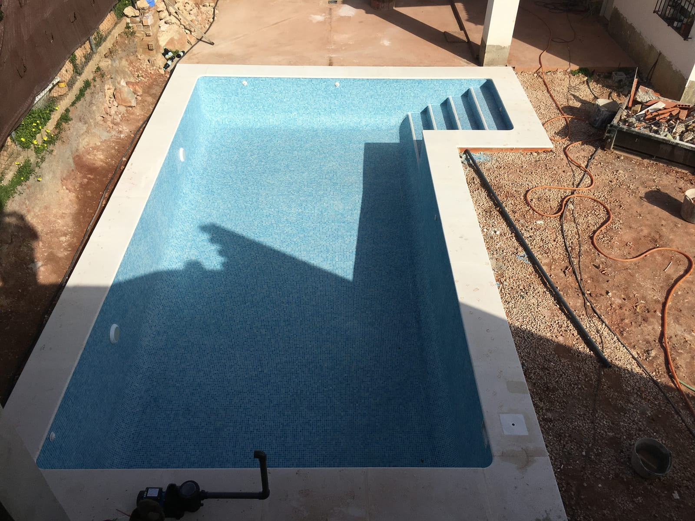
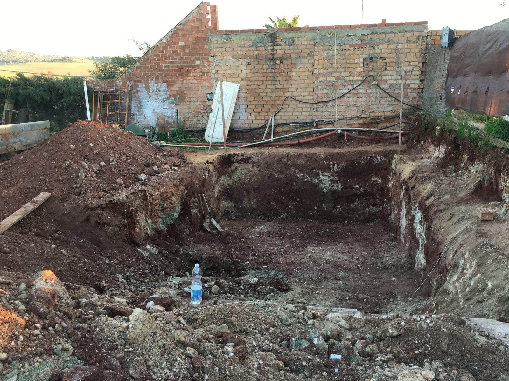
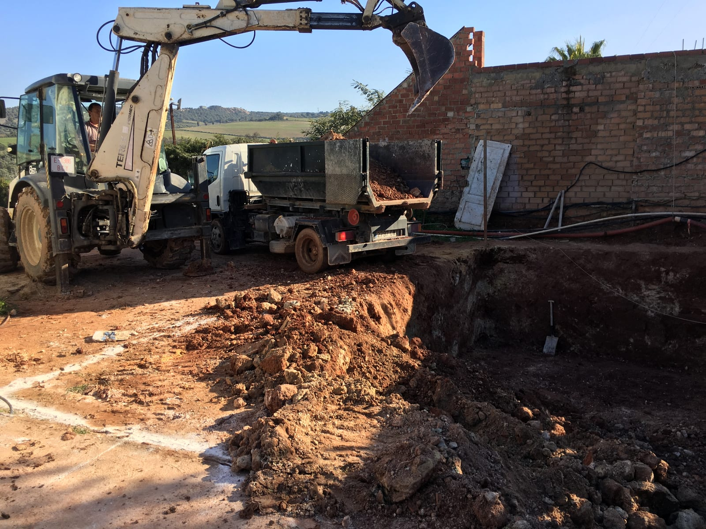
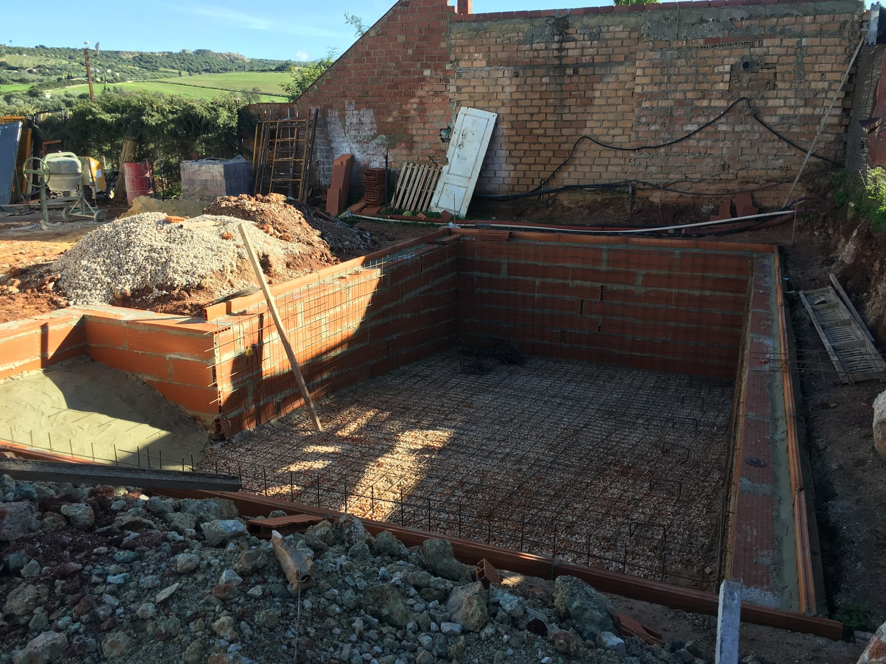
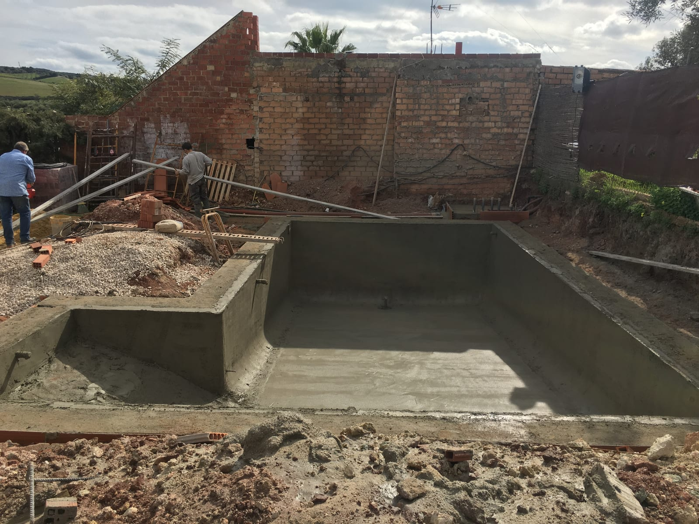
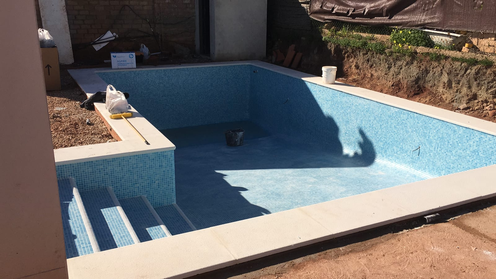

Arcos de la Frontera
Piscina skimmer de 8 × 4 m
Construcción de piscina con escalera de obra, revestimiento de mosaico azul y coronación clara.
Vaso revestido · exterior en obra
Ver las fotografías ↓Ver proceso y detalles · 6 fotografías




